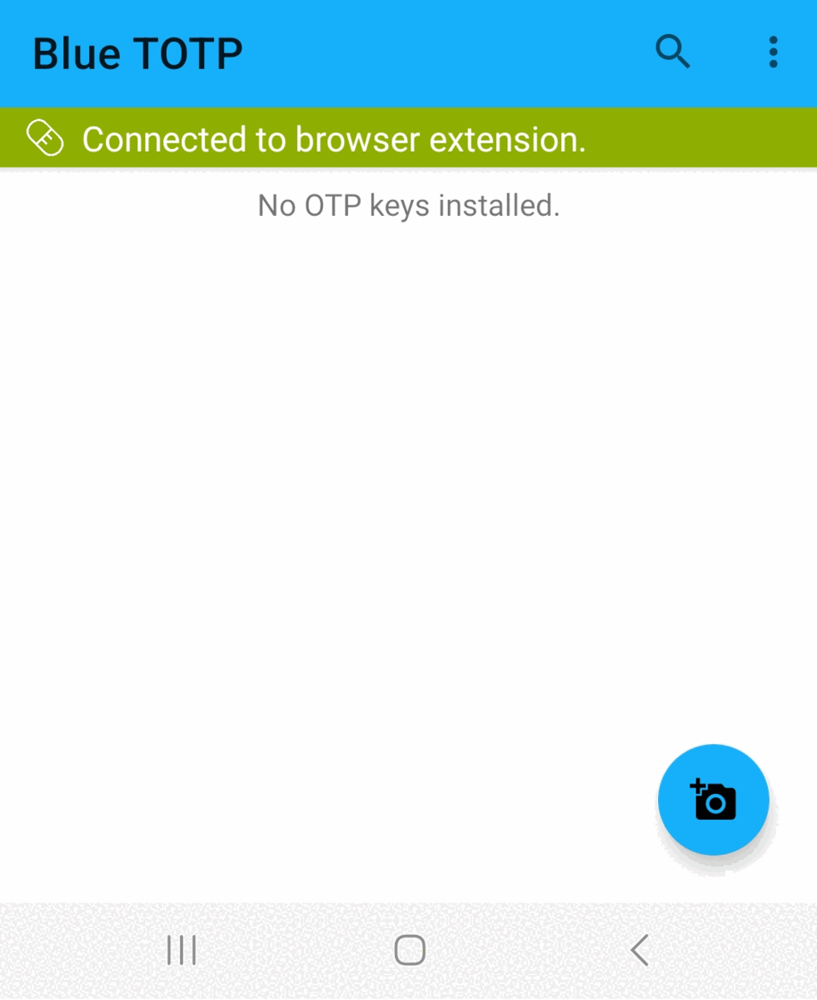

<h2 class="centerself titleMinor" style="text-align: center;">Neues Profil anlegen</h2>

<div class="text" style="margin-top: 18px; margin-bottom: 18px;">
    <ol class="enumerationText">
        <li>Öffnen Sie die Blue TOTP App auf Ihrem Smartphone.</li>
        <li>Tippen Sie auf den Scan-Button und scannen Sie den QR-Code:</li>
            
    </ol>
</div>

<div class="centerself" style="margin-top: 24px;">
    <span class="centerself" style="width: 100%;">
        <button id="backButton">Zurück</button>
    </span>
</div>

<div class="flex-row" style="margin-top: 18px;">
    <a class="centered text" style="align-self: center;">4/4</a>
</div>
